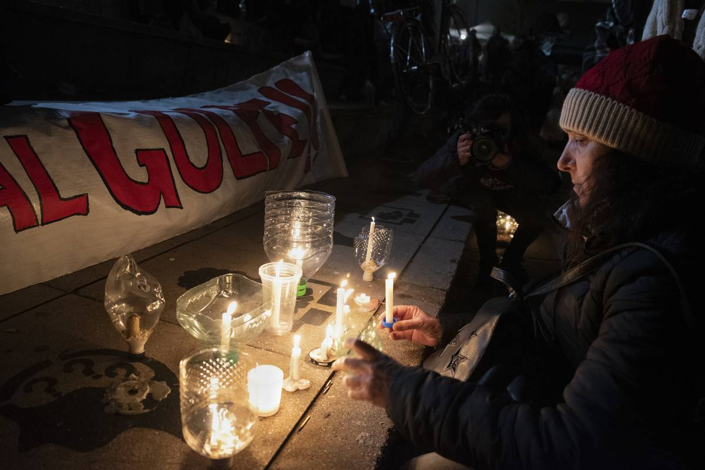
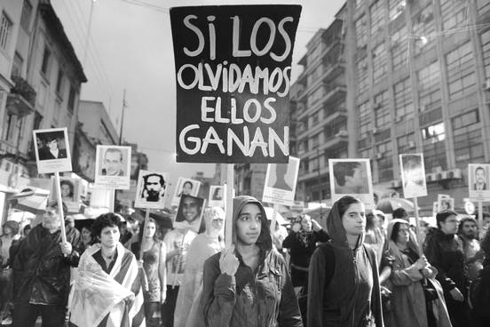

Hoy
27 de junio de 2023 se celebra
50 años del golpe de estado a manos del gobierno que se establecía en aquel Uruguay de 1973,
una dictadura que nacía con las intenciones de
“volver a lo bueno”, por años de una economía y un pueblo, casi devastado.

Vigilia por la Democracia, el 26 de junio de 2023, en la plaza Primero de Mayo. Foto: Martín Varela Umpiérrez
Un día antes el pueblo se reúne en la plaza primero de mayo, en el palacio legislativo para realizar la vigilia por la democracia como
históricamente lo hizo para alzar la voz y recordar que aquello ya no tiene que volver a pasar…
“¡NUNCA MAS AL TERRORISMO DE ESTADO!”, aún no
se sabe nada de
192 personas en el marco de las acciones ilegítimas del Estado…
¿Qué sucedió en el Uruguay de 1973?
¿Cuáles fueron los motivos para la abolición del parlamento?
Juan Maria Bordaberry en aquel entonces presidente electo desde el 1 de marzo de 1972, integrante del Partido Colorado,
disuelve el Parlamento con el apoyo de las fuerzas militares y policiales tras un proceso constante de restricción de las libertades públicas.
A partir de incidentes especialmente violentos - el asesinato de cuatro personas por parte del MLN tupamaros, el mismo gobierno con el apoyo
del partido nacional el 15 de abril del 72 aprueban la suspensión de garantías individuales y declaran el estado de guerra interno
(art. 31 de la Constitución uruguaya), otorgando jurisdicción a la justicia militar para actuar, fomentando la represión por parte
de las fuerzas armadas y la búsqueda de individuos vinculados con la guerrilla sin tomar en cuenta los derechos humanos. La represión se
extiende a todos los sectores de la izquierda.
En febrero de 1973 el ejército y la fuerza aérea se imponen ante el poder ejecutivo para exigir la renuncia del ministro de defensa General
Antonio Francese, quien había asumido ese mismo mes aquel 7 de febrero.
Se difundió un comunicado del Ejército y la Fuerza Aérea por el diario Acción de aquella época en su edición del jueves 8 la cual dice entre otras cosas:
“El actual Ministro de Defensa Nacional Sr. General Don Antonio Francese, a partir del momento de asumir su cargo ha reconocido ante los jerarcas máximos de las
Fuerzas no estar informado de la situación actual de las Fuerzas Armadas, al tiempo que manifestó no compartir y estar dispuesto a cambiar los lineamientos de la
actuación, objetivos y conductas que rigen actualmente a estas y que fueran expresadas públicamente en el comunicado conjunto del día de ayer, lo que en consecuencia
retrotraerá a la superada época de ser el brazo armado de intereses económicos y políticos, de espaldas al cumplimiento de sus misiones específicas de seguridad
nacional y a los intereses de la nación”
El
viernes 9 del mismo mes a la hora 22:30 el Ejército y la Fuerza Aérea a través de sus mandos dan a conocer el
Comunicado Número 4 y el sábado 10 de febrero
emitieron otro comunicado, el
Número 7.
Logran que se acepte la renuncia de Francese,
Bordaberry ordenó desbloquear la Ciudad Vieja la cual estaba tomada por
la Armada, y
de esta forma las Fuerzas Armadas entraban directamente a hacer política. Los Comunicados Número 4 y 7 conformaban un Plan Político y con él,
las Fuerzas Armadas lograrían que una buena parte de la izquierda uruguaya los apoyara.
El 27 de junio de 1973 el poder ejecutivo decreta la disolución de las cámaras y su sustitución por un consejo de estado, a la cual el movimiento sindical
uruguayo respondería con una huelga general y ocupación de los lugares de trabajo y los centros de estudio.

Marcha en repudio del robo de información en el local del Grupo de Investigación en Arqueología Forense. Foto: Santiago Mazzarovich (archivo, abril de 2016)